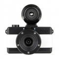

器材
党
全部器材
产品年表
名词百科
榜单
器材库
> 胶片袖珍相机（PS） > Fisheye Baby 110

Lomography
Fisheye Baby 110
分类
胶片袖珍相机（PS）
点评
0 条
图片
0 张
评测
0 篇
Fisheye Baby 110 迷你相机，小巧又便于使用。拥有170度广角的鱼眼镜头，还配备了B快门（Bulb）及长时间曝光功能。
产品类型
胶片袖珍相机（PS）
综合评分
暂无评分
无忌评测
暂无评测
规格参数
网友点评
(0)
产品图 / 样片
(0)
评测文章
(0)
规格总览
发布日期
2012-06-14
使用胶卷/胶片
110底片
画幅
17×13mm
镜头及对焦
镜头
塑胶制鱼眼镜头
光圈范围
恒定 f/8 光圈
视角（对角）
170°
曝光控制
快门速度
1/100秒, B门
取景规格
取景器
内置取景器
其它规格
颜色
银/黑色, 白/黑色
该产品暂无存档的网友点评
该产品暂无存档的产品图
评测 / 相关文章
该产品暂无存档的评测文章
相关文章
［资讯］Lomography推出首部110相机
（原站已下线）